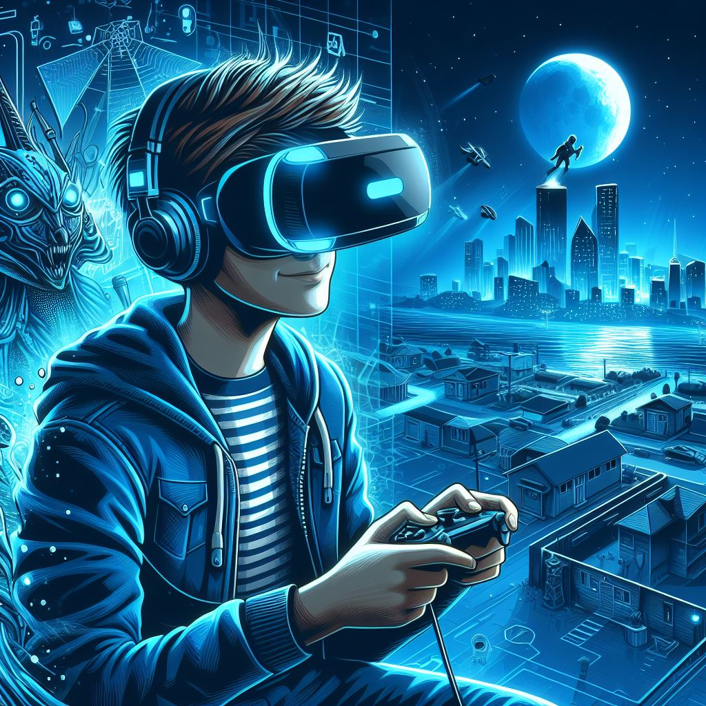

Hydra
- Sobre
- Serviços
- Tecnologias
"Os óculos de realidade virtual abrem portas para universos alternativos, fundindo o digital com nossos sentidos. Com tecnologia avançada, proporcionam uma imersão única em mundos fantásticos, jogos emocionantes e experiências educativas, expandindo fronteiras além da imaginação."
Os óculos Hydra oferecem uma visão excepcional em um mundo virtual.
Com tecnologia avançada, proporcionamos uma experiência imersiva e
clara,
seja para entretenimento ou produtividade. Com design elegante e
interface intuitiva,
os Hydra revolucionam sua percepção do mundo.
"Hydra, uma revolução para os olhos do futuro. Esses óculos virtuais transcendem a realidade, mergulhando você em um universo digital imersivo. Combinando tecnologia de ponta e design elegante, a Hydra não apenas aprimora sua visão, mas também transporta você para experiências inimagináveis. Dos mundos virtuais à interação aprimorada com o mundo real, os óculos Hydra abrem portas para um novo horizonte de possibilidades. Descubra a visão redefinida com a marca que está moldando o amanhã: Hydra."
Em um mundo onde a imersão é a chave para experiências inesquecíveis,
o óculos de realidade virtual Hydra
se destaca como uma porta de entrada para infinitas possibilidades.
Seja transportando você para cenários de jogos
eletrizantes ou proporcionando uma visão em 360 graus de destinos pelo
mundo, o Hydra redefine a maneira como interagimos com a tecnologia.
Com alta resolução e tecnologia avançada de rastreamento de movimento, o Hydra mergulha você em jogos e entretenimento como nunca antes. Sinta-se parte da ação enquanto explora mundos virtuais com gráficos impressionantes e uma sensação realista de presença.
